Module 6—Petrochemicals
 Self-Check Answers
Self-Check Answers
Contact your teacher if your answers vary significantly from the answers provided here.
SC 3.
Practice 6.
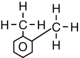
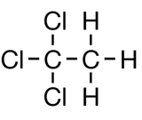
Practice 7.
-
This produces tetrachloromethane + hydrogen chloride in a substitution reaction.
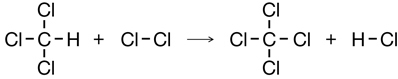
-
This produces 1,2-dibromopropane in an addition reaction.
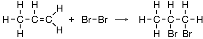
-
This produces iodoethane in an addition reaction.
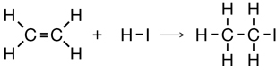
-
This produces chloroethane + hydrogen chloride in a substitution reaction.

-
This produces 1,2-dichloro-1,1,2,2-tetrafluoroethane in an addition reaction.
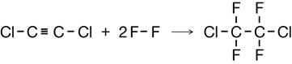
-
This produces 2-chlorobutane in an addition reaction.
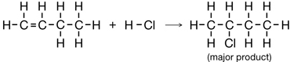
Don’t worry if you showed both 2-chlorobutane and 1-chlorobutane. As illustrated in the example on page 420 of the textbook, which shows the addition to propene, the 2-chloro isomer predominates.
-
This produces 1,2-dichlorobenzene + 1,3-dichlorobenzene + 1,4-dichlorobenzene + hydrogen chloride in a substitution reaction.
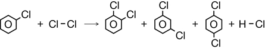
Practice 8.
-
This is a substitution reaction.
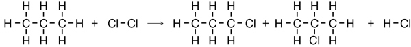
-
This is an addition reaction.
-
This is a substitution reaction.
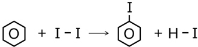
-
This is an addition reaction.
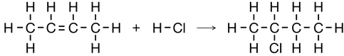
- This is a substitution reaction.
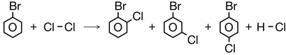
Practice 9.
- First, carry out an addition reaction using ethene and chlorine to produce 1,2-dichloroethane. Next, carry out a substitution reaction using the 1,2-dichloroethane and chlorine. The organic product will be the desired 1,1,2-trichloroethane.
- Chemical processes are invented as a means of carrying out reactions in order to synthesize desired substances.
- Ecological, economic, political, legal, and ethical perspectives should be taken into account when inventing a new technology.
Practice 10.
Both molecules have the same number of electrons and both exhibit dipole-dipole forces due to their polarity. In this case, molecular shape is the determining factor. The 2-bromopropane molecule is more compact and doesn’t make as much surface contact with its neighbours as compared to the more “stretched-out” 1-bromopropane molecules.
Practice 11.
- Ethical or social—the statement identifies the importance of society and human lives.
- Technological—the statement identifies technological uses of these substances.
- Scientific—the statement describes a research process and implies a scientific method and reliance on data, including the interpretation and evaluation of data.
- Economic—the statement identifies the monetary aspect of pesticide use.
- Political—the statement makes reference to a political process.
- Legal—the statement makes reference to laws and legislation.
- Ethical and ecological—the statement identifies that it would have been most appropriate to inform people and to allow them to make a decision about whether to be exposed to organic halides. The statement also references the carcinogenic nature of some organic halides.
- Social and ecological—the statement references societal action and a program that reduces the quantity of plastics in landfills.